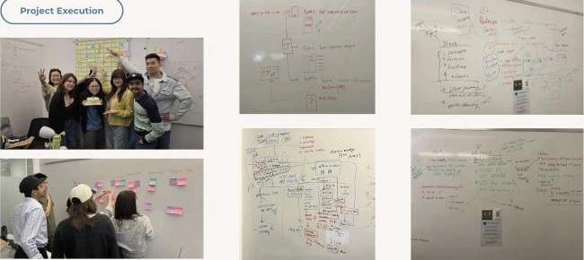

A directory can hold the answer.
That doesn't make it easy to find.
FNHA's existing provider information was available through a spreadsheet and a map. Finding support meant sorting through names, interpreting unfamiliar designations, and working out whether a provider was available and appropriate.
Our challenge was to turn that information into a clearer discovery experience: one that supported personal, cultural, and practical needs without asking people to become experts in the directory first.
How might we help people find a suitable mental health provider with less effort and more confidence?
Start with the person.
Then simplify the search.
My early research work helped frame the problem around the experience of seeking care. We examined the existing directory, explored accessibility and cultural safety considerations, and used personas and journey mapping to identify where the search could become difficult.
Too much information competes for attention.
Provider names, credentials, filters, and map pins all demanded interpretation. We needed a clearer hierarchy and fewer decisions at the start.
Trust depends on practical details.
Availability, cultural safety indicators, service format, and clear next steps needed to be easier to find and compare.
Desktop assumptions don't cover every context.
Our early journey work considered phone use, varying digital confidence, and unstable internet connections. These became important questions for the next design iteration.
Test the assumptions
before polishing the interface.
We explored two directions: a guided search experience and a redesigned map with a provider list. My contribution included planning user testing. The team compared prototypes and visual directions, looking at how people searched, interpreted filters, and assessed provider information.
Internal test figures reported in the Week 5 and Week 6 presentations. Availability is a survey finding, not a measure of improved access to care.
Filters did the heavy lifting.
40.9% preferred filters, 50% preferred filters with a map, and only 9.1% preferred the map alone. Participants also called out clutter and competing information.
Make the essential signals easier to scan.
We prioritized availability, clearer provider cards, more visible filters, and a calmer mobile hierarchy. The early hybrid direction combined map visibility with a simpler search structure.
A useful idea still has
to be the right thing to build.
After internal testing, we discussed a mobile-first pivot that also considered unreliable connectivity. The proposal explored full internet, low internet, and offline experiences, including saved provider information and a possible SMS fallback.
That exploration changed the conversation, but it did not become the final scope. The client did not need offline mode, so we did not proceed with it. Instead, the team delivered an additional admin website to support provider data management.
Offline and SMS support
Considered after internal testing. Offline mode was not pursued following client alignment. SMS and native app distribution remained proposals.
An admin website
A separate interface for the organization to manage provider information, review issues, and maintain the directory.
View admin sign-in ↗The pivot wasn't “add more features.”
It was “build what the client actually needs.”
Give the next step
room to be obvious.
I designed the mobile interface, focusing on a readable hierarchy and a clear path from searching to reviewing a provider. The team’s testing highlighted tight spacing, small touch targets, confusing filters, and weak feedback around saved providers.
Screens from the team's deployed web prototype. They show the responsive product, not a native app release.
Clarify what the search accepts.
A city-specific prompt makes the input more predictable than a broad search box that appears to accept any healthcare keyword.
Put decision-making information first.
Availability, location, service format, and provider details give people a more useful basis for comparison.
Keep the path to action visible.
Separate browsing, refining, reviewing, and contacting a provider into understandable steps.
View the team's detailed user flow
Something can be helpful
and still be hard to use.
The external testing round involved 35+ participants, including 3 First Nations users. It exposed a gap between valuing a feature and understanding how to use it, particularly around filters and map-based discovery.
Broad-looking search created false expectations.
People tried terms such as “mental health” and “FNHA,” then encountered mismatched or empty results. The design direction shifted toward an explicit city search and clearer guidance.
Important controls were too hard to interpret.
Long categories, unclear designation labels, and uncertainty about combining selections increased effort. We worked toward a clearer hierarchy and simpler filtering.
The early preference didn't settle the question.
Internal testing had supported map-and-list exploration. Later testing showed many people overlooked the map or questioned its purpose. The final presentation records its removal from the delivered experience.
The words around the interface mattered.
Participants valued the tutorial, but needed clearer location labels, more specific availability information, and a less ambiguous way to report incorrect details.
Support discovery.
Support the people maintaining it.
The team delivered the online provider discovery platform and an additional admin website. The final presentation also records a handoff of development resources, documentation, and video-based onboarding so the client could continue working with the platform.
The admin site requires authentication. Its responsibilities are described from the final presentation; protected screens are not reproduced here.

Research should change the scope.
The value of testing was not just improving a screen. It helped the team reconsider the map, explore connectivity, and align the final work with the client's actual priorities.
Mobile design is an information problem.
Moving a desktop layout onto a phone is only the beginning. The more important work is deciding what deserves attention first and making each next step understandable.
Keep listening beyond the prototype.
With only three First Nations participants in the external round, continued community involvement would be an important next step before making broader claims about cultural appropriateness and impact.
Project materials
Sources: Team Trestle’s final presentation, the June 10 and June 17 internal reviews, the July 8 external-testing review, and the team’s FigJam brainstorm. My responsibilities and final scope are confirmed from my project account.
Internal survey findings, external usability feedback, explored concepts, and delivered functionality are distinguished throughout this case study.